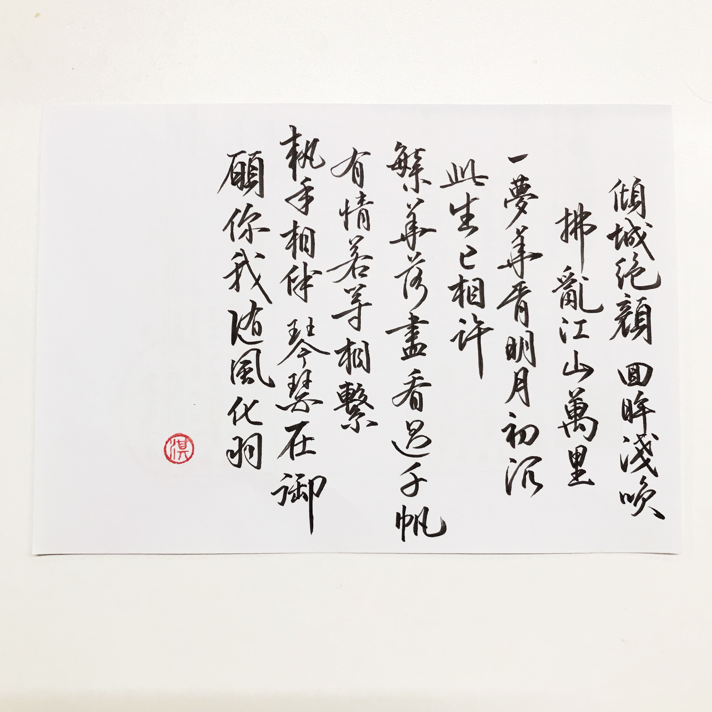
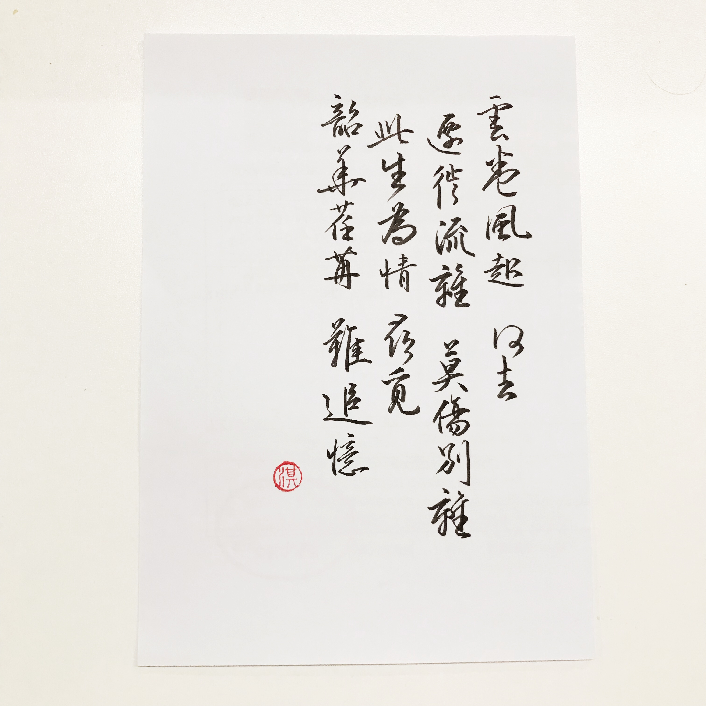
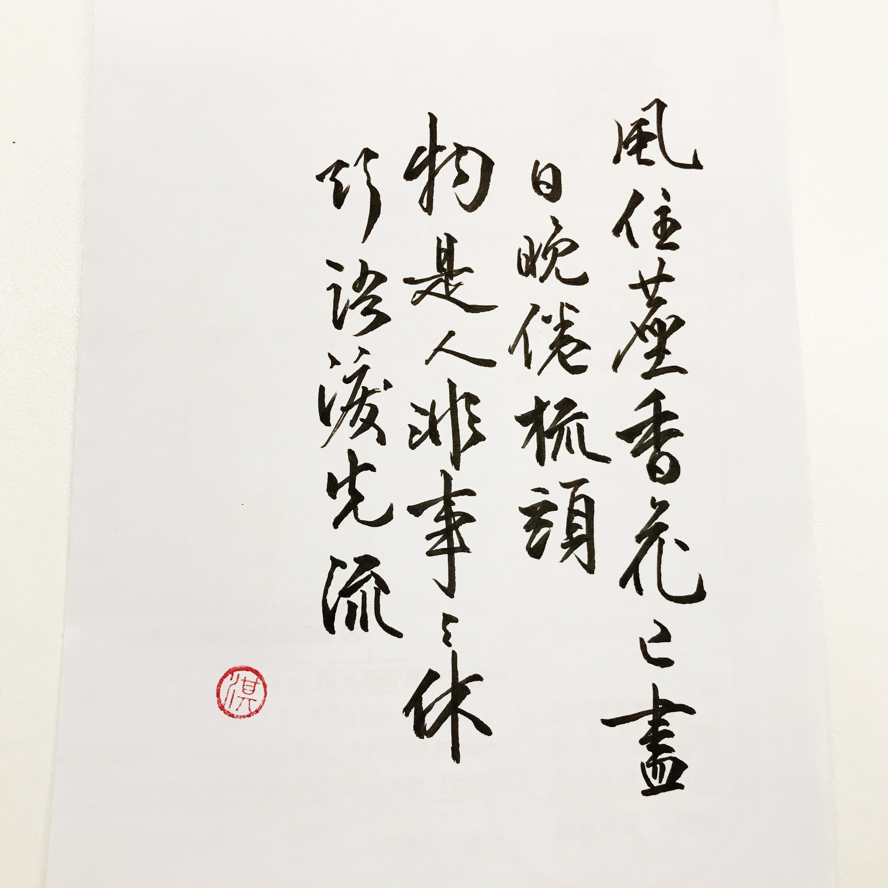

Toggle site
Catalog
You've read
0
%
1.
1
2.
2
3.
3
HuiYe
天青色等烟雨，而我在等你。
Follow Me
Articles
6
Tags
7
Categories
5
HandsYe
Home
Archives
Tags
Categories
行书练字日常-1
2019-12-18
|
生活随笔
1 
2 
3 
本文原创，如需转发转载请注明出处。
曾47
练字
行书练字日常-2
centos系统内核降级解决方法